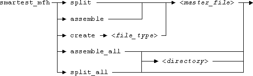

Using the Setup Management Tool from the Command Line
For a conceptional description of the Setup Management Tool see the topic Setup Management Tool.
The program file of the Setup Management tool has the name smartest_mfh and is located in the directory /opt/hp93000/soc/com/SETUP_MAN.
It must be called in the following format:

The parameters have the following function:
- The first parameter defines what the tool is to do. The possible options are:
assemble
Merges the subfiles specified in the master file of the master_file parameter and downloads the resulting setup file. The name of the target file is specified by the testerfile entry within the master file.
split
Splits the tester setup file specified by the testerfile parameter within the master file into subfiles according to the entries in the master file.
If some parts of the tester setup file are not included in the entries of the master file, the setup management tool will generate the sub-files for these parts automatically. The naming strategy of the automatically generated sub-files are controlled by two macro variables, VERIGY93000_MFH_CONTENTBASED and VERIGY93000_MFH_PREFIX.
VERIGY93000_MFH_PREFIX defines the prefix to be used in the naming strategy.
VERIGY93000_MFH_CONTENTBASED defines the naming strategy. Its value can be 1, 0 or empty.
- If VERIGY93000_MFH_CONTENTBASED is set to 1, the automatically generated sub-files will be named <prefix> eqnset_<equationNumber>. ("eqnset" is used if the content of the tester file is an equation set. The string to be used depends on the content of the tester file.) For example, to split a level tester file, if the prefix is "LEVEL" and two sub-files are automatically generated. These two files will be named LEVELeqnset_01.lev and LEVELeqnset_02.lev.
- If VERIGY93000_MFH_CONTENTBASED is set to 0 or empty, the automatically generated sub-files will be named <prefix>mfh_generated_<fileNumber>. For example, to split a level tester file, if the prefix is "LEVEL" and two sub-files are automatically generated, these two files will be named LEVELmfh_generated_01.lev and LEVELmfh_generated_02.lev.
assemble_all
Performs a merge for all master files in a device directory. If smartest_mfh is not called in the root directory of the device, the device directory must be specified in the last parameter.
split_all
Performs a split for all master files in a device directory. If smartest_mfh is not called in the root directory of the device, the device directory must be specified in the last parameter.
create
Creates an empty master file with the specified file name. The new file specifies the master file name without the .mfh extension as the tester setup file. If the tester setup file you want to split has a different name, you must either change the tester file name in the master file, or rename the tester setup file.
For this, and only for this, option you must specify the file_type parameter.
- <file_type>
This parameter can only be specified for the create operation mode and is required for this mode. It specifies the type of setup component for which the master file is created. This information is required for the first line of the master file. The possible values are:
level, timing, analog_control, waveform, routing, testflow, testtable
- <master_file>
This parameter specifies the name of an existing master file which contains the information for the split or merge, or the name of the master file that is to be created. This parameter must be specified for the assemble, split, and create operation modes.
- <directory>
If the operation mode is assemble_all or split_all, you can specify the root of the directory tree whose master files are to be processed. This is necessary if the Setup Management Tool is not called from the respective directory.
Note that the tester setup file to be split or created is not specified as one of the parameters. This name must be defined within the master file. As long as you start the tool from the Test Program Explorer, the Test Program Explorer sees to it that the actual name of the setup file matches the name within the master file (by renaming the setup file accordingly). But if you use the Setup Management Tool from the command line, you must take care of this yourself.
Functional changes
- Introduced before SmarTest 6.3.2
- SmarTest 6.5.2: Renamed macro variable AGILENT93000_MFH_CONTENTBASED to VERIGY93000_MFH_CONTENTBASED.
- SmarTest 6.5.2: Renamed macro variable AGILENT93000_MFH_PREFIX to VERIGY93000_MFH_PREFIX.
- SmarTest 6.5.3: New file type testtable.